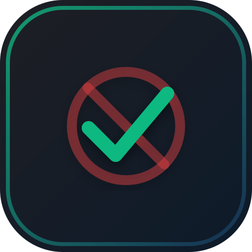

Interactive Tasks
Active View
No tasks rendered. Type something in the Custom Tasks editor or import a backup file to get started.

Habit Reform through Mindful Restraint
No tasks rendered. Type something in the Custom Tasks editor or import a backup file to get started.